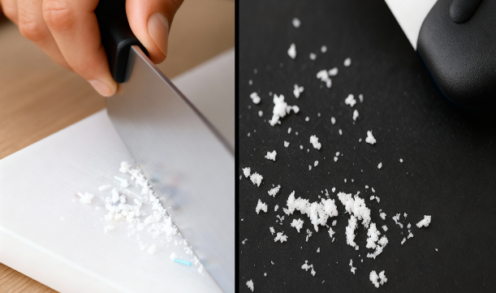
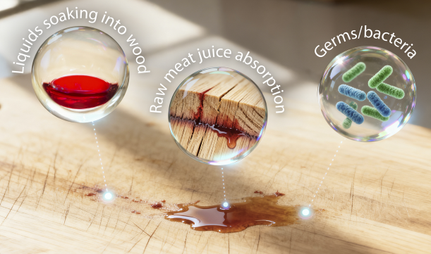
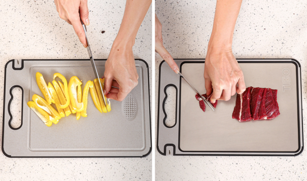
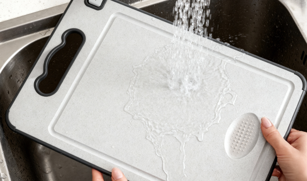
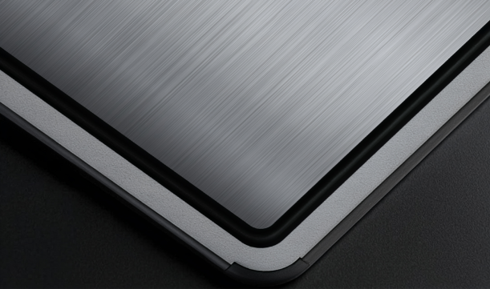
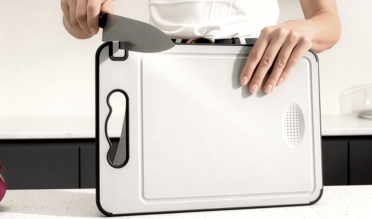
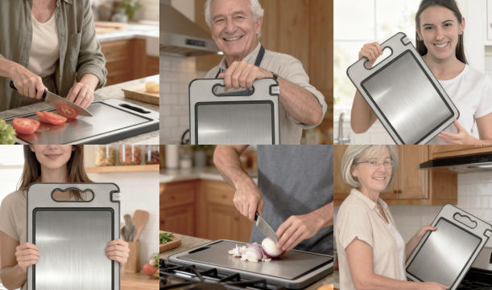

Kitchen · What we found
22,504+ BaseLocal readers wanted a cutting board free of microplastics and bacteria. Titanium passed every check.
We didn't expect a cutting board to matter this much. Then we read what the studies say plastic and wood leave in your food, and found a titanium board (TIBO) that replaces plastic boards, wooden boards, knife sharpeners, and garlic graters all-in-one.

The scoresheet nobody hands you at the store
We scored all three materials on six checks: the things a cutting board has to get right, from keeping microplastics out of your food to keeping a knife sharp.
Every result is backed by a published study, a federal guideline, or the manufacturer's spec.
| What we checked | Titanium | Plastic | Wood |
|---|---|---|---|
| No plastic in your food | ✓ | ✗ | ✓ |
| Clean below the surface | ✓ | ✗ | ✗ |
| Safe for meat and produce | ✓ | ✗ | ✗ |
| Survives the dishwasher | ✓ | ✓ | ✗ |
| Gentle on knife edges | ✓ | ✗ | ✓ |
| Sharpens your knife | ✓ | ✗ | ✗ |
| Final score | 6of 6 | 1of 6 | 2of 6 |
Row-by-row evidence in the sections below. Studies cited where used; product features per the manufacturer.
Swipe the table sideways to compare →
That's the scorecard at a glance.
Now let's get into the meat (pun intended!) of each round, with the evidence behind each result.
Round 1 of 6 · What ends up in your food
A plastic board sheds plastic with every slice
What's the problem?
Every slice on a plastic board shaves off a bit of the board itself, and it goes straight into your food. In 2023, researchers measured how much.
- 14–71 million microplastic particles a year, from a single board
- Up to about 50 grams by weight, roughly ten credit cards
- The white scars you can already see are plastic that's gone into the food
Source: Yadav et al., Environmental Science & Technology, 2023.

Why titanium and wood take this round
Neither sheds plastic. Titanium has no coating to flake off and nothing soft enough for a blade to carve loose, so its surface stays intact slice after slice. Wood gives up shavings of its own, but they're wood, not plastic.
Round 2 of 6 · Below the surface
Wood wins on shedding, then loses in the grooves
What's the problem?
Every knife stroke leaves a groove, and both plastic and wood collect them. Raw-meat juices settle into those cuts below where any sponge reaches, so the board looks clean while the part you can't see isn't.
- Wood's grooves run deep and hold raw-meat juices for days
- Plastic scars just as easily, and bacteria settle into the cuts
- About 200× more bacteria on the average board than a toilet seat
- USDA guidance: once a board is heavily grooved, throw it out
Source: NSF International household germ study.

Why titanium takes this round
Titanium is non-porous, and its face is too hard for knife grooves to form. Nothing soaks in because there's nowhere for it to go, so what you wipe off is everything there was.
Round 3 of 6 · Cross-contamination
Raw chicken, then tomatoes: the swap nobody makes mid-recipe
What's the problem?
Food-safety rules say to keep separate boards for raw meat and produce. A plastic or wooden board is one surface, though, so mid-recipe, with chicken on your hands and a pan already hot, nobody stops to fetch and wash a second one.
The stakes aren't small: 1 in 6 Americans, about 48 million, get sick from contaminated food in a typical year.
Source: CDC foodborne illness estimates.

Why titanium takes this round
TIBO builds the second board in. Titanium handles raw proteins on one side; a separate surface on the back takes produce. You flip it instead of rewashing, and the separation happens on its own.
Round 4 of 6 · Cleanup
The dishwasher round
What's the problem?
Wood can't take the heat. One dishwasher cycle warps it, splits it, and strips its finish, which commits you to hand-washing it for life.

Why titanium and plastic take this round
Titanium goes in with the plates and comes out unchanged. Garlic, beets, and turmeric rinse off without staining, and no odor lingers for tomorrow's fruit salad.
Plastic survives the rack too, but every cycle softens a face that's already scarred.
Round 5 of 6 · Your knives
A metal board that's softer than your blade
What's the problem?
Metal board, ruined knives: that's the instinct, and for glass or stainless steel it's right. Plastic is quietly bad too, since the same scarring that sheds particles also chews at the blade.
- Glass and stainless steel: ruin an edge fast
- Plastic: dulls a knife quicker than its reputation suggests
- Wood and titanium: easy on the blade

Why titanium and wood take this round
Titanium is the exception to the metal-board rule. Grade 2 titanium is measurably softer than hardened blade steel, so an edge presses into the board instead of folding against it.
Wood is gentle on edges too, so it shares this round.
Round 6 of 6 · The tiebreaker
The only board that maintains the knife it meets
What's the problem?
No plastic or wooden board has ever sharpened anything. A dull blade slips, and slipping is how prep injuries happen, so a sharp edge is more than a nicety.
- A standalone knife sharpener: $50–80, one more drawer gadget
- Professional sharpening: $50–100 a year (manufacturer's estimate)
- And the dull knife is the one most likely to slip


Why titanium takes this round
TIBO has a ceramic sharpening slot built into the board, so a few pulls before prep keep the edge honest. A garlic-and-ginger grater is pressed into the surface too, which means the sharpener you'll actually use is the one already under your tomatoes.
The board we'd recommend
TIBO's 4-in-1 is the board our review kept pointing back to: the one material that cleared every check above, in a design that folds four kitchen tools into one.
TIBO 4-in-1 Titanium Cutting Board
One board standing in for four tools: both cutting surfaces, a knife sharpener, and a grater.
- ✓ Double-sided: medical-grade titanium for raw meat, a second surface for produce
- ✓ Ceramic knife sharpener built into the handle
- ✓ Garlic and ginger grater set into the board
- ✓ Dishwasher-safe and non-porous, so it won't stain or hold odors
- ✓ Juice groove and non-slip base
Every order carries a 30-day money-back guarantee and a 1-year warranty.
"I hesitated at the price. Three months in, the built-in sharpener alone has earned it back. My knives haven't been this sharp since I bought them."Sarah M., Seattle, WA
"I cook six nights a week. Prep moved faster the first night, and I've stopped juggling two boards between the chicken and the salad."Jennifer K., Portland, OR

A few honest questions
Is titanium safe to cut food on?
It's the same Grade 2, 99%+ pure metal used for surgical implants and dental hardware, chosen for those jobs because the body tolerates it. There's no coating to wear through and nothing reactive for acidic food to pull out.
Won't a metal board ruin my knives?
Glass and stainless steel would. Grade 2 titanium is softer than hardened blade steel, which is why round five went the way it did, and the board carries its own sharpener for the gradual dulling every surface eventually causes.
How do I know I'm getting real titanium?
Hold a magnet to it: titanium isn't magnetic, but the stainless-steel boards sold as "titanium" on marketplaces usually are. TIBO sells directly rather than through third-party listings.
What if it isn't for me?
Return it within 30 days for a full refund, with the return shipping covered.
Six rounds. TIBO passed them all.
The 50% launch discount applies while the current production run lasts.
BaseLocal earns a commission when you buy through links on this page. It doesn't change what you pay.